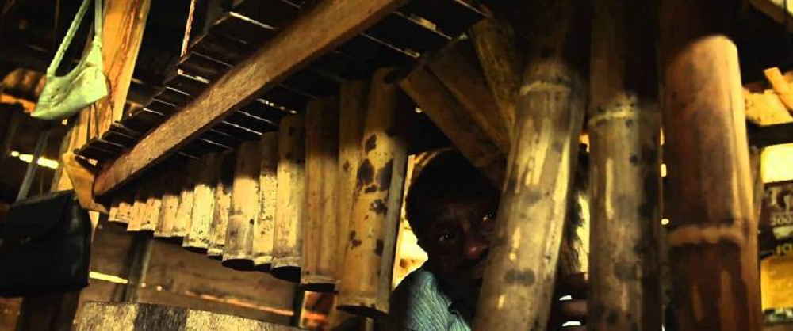

Marimba de chonta
Apunte 034
Inicio > Blog Bitácora de un músico > Apunte 034
Una marimba de Buenaventura
Hacia 1960, el músico y constructor de instrumentos Teófilo Potes fabricó una marimba en Buenaventura, en la costa del Pacífico colombiano. Actualmente conservada en la colección de instrumentos musicales del Banco de la República, consta de veintitrés láminas de madera, veintitrés resonadores de bambú, una estructura de soporte fabricada con madera y fibras vegetales, y baquetas con cabezas recubiertas de látex.
El instrumento mide aproximadamente 180 centímetros de longitud y fue diseñado para ser tocado por dos músicos. Podía suspenderse de soportes elevados o colocarse sobre una estructura independiente.
Esta marimba pertenece a una tradición instrumental particularmente asociada con las comunidades afrodescendientes de la costa pacífica del sur de Colombia y de la provincia ecuatoriana de Esmeraldas. Su música acompaña celebraciones, danzas y otras actividades comunitarias, a menudo en combinación con tambores, sonajas y canto.
Desde el punto de vista organológico, la marimba de chonta es un idiófono percutido. El Banco de la República clasifica el instrumento fabricado por Potes en la categoría 111.222.22 de Hornbostel-Sachs, que lo identifica como un conjunto de placas de percusión con resonadores.
Su construcción reúne varios materiales, cada uno seleccionado y preparado para cumplir una función particular. Las láminas de madera producen los sonidos principales, los tubos de bambú los refuerzan y la estructura de soporte permite que las láminas vibren. Pero las características musicales del instrumento dependen igualmente de cómo se preparan y afinan esos materiales.
Trabajar con chonta y guadua
Las láminas sonoras se fabrican tradicionalmente con la madera dura de la parte exterior de las palmas conocidas localmente como chonta. El nombre no identifica necesariamente una única especie botánica en toda la región. Las fuentes ecuatorianas documentan el uso de Bactris gasipaes, mientras que el nombre "chonta" también se aplica a otras palmas, entre ellas Iriartea deltoidea.
Los constructores seleccionan materiales capaces de producir un sonido claro al ser golpeados. Las láminas deben poseer suficiente rigidez y elasticidad, pero su comportamiento acústico también depende de sus dimensiones, densidad y estructura interna.
La construcción tradicional implica cortar la madera de palma en piezas, prepararla y secarla, y darles forma a las láminas gradualmente. Estos procedimientos varían entre constructores. La documentación de Esmeraldas describe la selección de madera de palmas maduras, su inmersión en agua durante la preparación y el posterior secado cerca de una estufa de leña. Los talleres de Guapi emplean sus propios métodos.
La afinación requiere ajustar cada lámina, generalmente mediante la eliminación de material y pruebas repetidas. Las piezas obtenidas de una misma palma no responden necesariamente de manera idéntica, por lo que el constructor debe evaluar cada una de ellas.
Debajo de las láminas cuelgan resonadores construidos tradicionalmente con guadua, un bambú de gran tamaño. Cada tubo está asociado con una lámina determinada, y sus dimensiones se ajustan para reforzar componentes del sonido de esa lámina.
Al ser golpeada, la lámina de madera vibra en varios modos. La columna de aire encerrada en el tubo de bambú posee sus propias frecuencias de resonancia, determinadas en parte por su longitud y sus dimensiones internas. El constructor ajusta la relación entre ambos componentes para obtener la respuesta acústica deseada.
Las láminas descansan sobre una estructura de soporte, a veces denominada "cama", donde las fibras vegetales proporcionan una superficie de contacto relativamente flexible. Las marimbas antiguas solían suspenderse de soportes elevados, mientras que los instrumentos contemporáneos pueden incorporar estructuras independientes.
El resultado depende de los conocimientos del constructor sobre los materiales y su comportamiento. Seleccionar una madera de palma adecuada es solo el comienzo. Preparar las láminas, ajustar sus dimensiones, combinarlas con los resonadores y establecer la afinación deseada son etapas distintas de la construcción.
Afinación fuera de temperamento
Una de las características más estudiadas de la marimba de chonta tradicional es su afinación.
En 2010, Carlos Miñana Blasco publicó un estudio en el que comparaba mediciones de alturas de nueve marimbas asociadas con el Pacífico sur colombiano y el norte de Ecuador. Su investigación cuestionó las descripciones que trataban estos instrumentos como aproximaciones imperfectas a las escalas diatónicas o cromáticas occidentales.
Los intervalos medidos entre láminas sucesivas diferían de los del temperamento de doce tonos. Varios instrumentos eran compatibles con una organización aproximadamente equiheptatónica, en la que la octava se divide en siete intervalos de tamaño relativamente similar.
Este sistema difiere considerablemente de la afinación de un piano, cuya octava contiene doce semitonos iguales. Una organización equiheptatónica produce una distribución diferente de los tamaños de los intervalos y, por lo tanto, distintas relaciones entre las notas.
Miñana no estableció que todas las marimbas de la región siguieran un sistema de afinación universal. Su muestra era limitada y los propios instrumentos presentaban diferencias. La importancia de sus hallazgos residía en demostrar la existencia de relaciones sistemáticas entre alturas que no podían describirse adecuadamente mediante las categorías occidentales convencionales.
Los métodos utilizados por los constructores tradicionales son igualmente importantes. Investigaciones documentadas por la Universidad Nacional de Colombia describen a constructores de instrumentos que establecían relaciones entre alturas mediante la escucha y el recuerdo de patrones musicales. Un constructor podía reproducir intervalos de una melodía vocal conocida, establecer varias láminas de referencia y utilizarlas después para determinar las alturas restantes.
Este procedimiento no requiere necesariamente un patrón externo de afinación fijo. El constructor trabaja a partir de relaciones recordadas entre sonidos y realiza ajustes hasta que las láminas corresponden a la organización musical buscada.
En consecuencia, dos marimbas tradicionales pueden diferir en sus alturas absolutas o en su organización interválica sin que ninguna de ellas esté incorrectamente afinada. Su adecuación debe considerarse en relación con las prácticas musicales para las que fueron construidas.
Cómo influye la afinación en la interpretación
La relación entre la afinación y la práctica musical fue examinada más detenidamente por Jorge E. Useche, Rafael G. Hurtado y Federico Demmer en un estudio publicado en 2019.
Su investigación consideró la interacción entre la afinación, el timbre y la organización melódica de la marimba. En lugar de medir las alturas individuales de manera aislada, investigaron cómo se relacionan las combinaciones de sonidos con los patrones musicales interpretados en el instrumento.
Un aspecto importante se refiere al desplazamiento de figuras melódicas a lo largo del teclado. Un músico puede reproducir un patrón conocido comenzando en una lámina diferente, conservando las relaciones espaciales entre las notas. La secuencia de movimientos sigue siendo reconocible, aunque los intervalos resultantes no correspondan exactamente a una transposición medida en semitonos del temperamento igual.
El estudio examinó cómo interactúan estos procedimientos con la afinación del instrumento y las relaciones perceptivas entre sus sonidos. Un sistema de afinación no siempre puede comprenderse independientemente de las maneras en que los músicos lo utilizan. Los intervalos entre láminas adyacentes son importantes, pero también lo son las combinaciones seleccionadas durante la interpretación, la repetición de figuras establecidas y las relaciones entre las partes instrumentales simultáneas.
Las mediciones de Miñana y la investigación posterior de Useche y sus colegas abordan el problema desde perspectivas complementarias: la construcción de una organización particular de alturas y su utilización en la interpretación musical.
Dos músicos en un mismo instrumento
Las marimbas de chonta tradicionales pueden ser tocadas por dos músicos que trabajan simultáneamente en diferentes secciones del teclado.
El registro grave suele estar asociado con el bordonero, que mantiene patrones recurrentes que proporcionan continuidad rítmica y musical. El registro agudo es interpretado por el tiplero o requintero, cuya parte incluye figuras melódicas, variaciones y ornamentos.
Estas funciones no deben reducirse a una división rígida entre acompañamiento y melodía. Ambos músicos participan en la organización rítmica de la interpretación, y sus partes interactúan mediante la repetición, la variación y los patrones coordinados.
La marimba también forma parte de un conjunto más amplio. Una configuración habitual incluye dos bombos, dos cununos y varias guasás. Los bombos son tambores de mayor tamaño; los cununos son tambores más pequeños que se tocan con las manos; y las guasás son idiófonos sacudidos que frecuentemente acompañan el canto.
Estos instrumentos participan en formas musicales festivas como el currulao, la juga, el pango y la caderona, en las que la interpretación instrumental está estrechamente asociada con el canto y la danza.
Sin embargo, la marimba no acompaña todas las prácticas musicales de la región. El Plan Especial de Salvaguardia de Colombia de 2010 distingue entre los repertorios interpretados con conjuntos de marimba y otras tradiciones en las que predominan diferentes combinaciones instrumentales o las voces sin acompañamiento.
Ciertos arrullos dedicados a los santos y algunas formas de bunde asociadas con los velorios de niños pequeños se acompañan tradicionalmente sobre todo con tambores y sonajas. Los alabaos, interpretados durante las ceremonias funerarias de adultos, se cantan frecuentemente sin acompañamiento instrumental.
Estas distinciones son importantes para comprender el lugar de la marimba dentro de la cultura musical de la región. Su papel central en determinadas festividades no implica que esté presente en todas las ceremonias o tradiciones vocales.
Conexiones africanas e interrogantes históricos
La marimba de chonta está estrechamente asociada con las tradiciones musicales afrodescendientes de las costas del Pacífico de Colombia y Ecuador. Su construcción e interpretación se han comparado frecuentemente con las tradiciones africanas de xilófonos.
Estas comparaciones tienen un considerable interés organológico. Los instrumentos africanos documentados por investigadores como Gerhard Kubik presentan sistemas sofisticados de construcción de láminas, resonadores, afinación e interpretación en varias partes.
Miñana también examinó posibles relaciones entre la organización interválica de las marimbas del Pacífico y los sistemas de afinación documentados en África. Sin embargo, estas comparaciones no establecen una historia única e ininterrumpida de transmisión.
La documentación histórica es incompleta, y los instrumentos musicales han circulado y cambiado mediante las interacciones entre diferentes poblaciones. Eduardo Restrepo (2026) ha cuestionado los relatos que presentan un origen exclusivamente africano como un hecho establecido, llamando la atención sobre los cambios en la interpretación histórica del instrumento y las evidencias de prácticas relacionadas con la marimba entre comunidades indígenas.
Esto no niega la importancia de las contribuciones africanas a la cultura musical afropacífica. Significa que el desarrollo histórico preciso del instrumento requiere algo más que identificar semejanzas entre instrumentos actuales.
Instrumentos cambiantes, afinaciones cambiantes
La construcción de marimbas continúa desarrollándose en respuesta a diferentes circunstancias musicales y educativas.
En Guapi, Cauca, el taller Palma Chonta, asociado con Ever Riascos, ha producido instrumentos para músicos locales, proyectos educativos e intérpretes profesionales. Su trabajo incluye la preparación de láminas de chonta, la fabricación de resonadores, la construcción de estructuras de soporte y la afinación de los instrumentos terminados.
Las marimbas contemporáneas pueden incorporar soportes de madera independientes en lugar de suspenderse de las vigas del techo. Estas estructuras facilitan el transporte y la interpretación en conciertos.
Las prácticas de afinación también se han diversificado. Algunos constructores reproducen organizaciones interválicas tradicionales, mientras que otros fabrican marimbas compatibles con el temperamento igual occidental, particularmente para interpretaciones que incluyen pianos, guitarras y otros instrumentos afinados convencionalmente. Ambos enfoques requieren destreza técnica. La diferencia reside en las relaciones musicales que los instrumentos resultantes están destinados a permitir.
En 2010, la UNESCO inscribió las músicas de marimba y los cantos tradicionales del Pacífico sur de Colombia en su Lista Representativa del Patrimonio Cultural Inmaterial de la Humanidad. En 2015, la declaración se amplió para incluir la provincia ecuatoriana de Esmeraldas. Este reconocimiento se refiere a prácticas musicales vivas, incluidas la interpretación instrumental, el canto, la danza y la transmisión de conocimientos dentro de las comunidades.
La coexistencia de marimbas tradicionales y temperadas plantea un desafío particular para esa transmisión. Los instrumentos diseñados para entornos educativos o de concierto estandarizados pueden facilitar ciertas colaboraciones, pero no necesariamente conservan las organizaciones interválicas documentadas en instrumentos antiguos. Si esos sistemas dejan de reproducirse, los músicos y constructores pueden perder el acceso a posibilidades de afinación distintivas que formaban parte de la historia musical de la región.
La cuestión no es si las marimbas contemporáneas deberían cambiar. Ya lo han hecho, y los constructores siguen adaptando sus instrumentos a nuevas circunstancias. La preocupación más específica es si los músicos del futuro todavía podrán conocer, aprender y reproducir las diferentes tradiciones de afinación documentadas a lo largo de la costa del Pacífico.
Lecturas
- Banco de la República. s. f. "Marimba". Colección de Instrumentos Musicales, pieza AM04. Instrumento fabricado por Teófilo Potes, Buenaventura, ca. 1960.
- Colombia, Ministerio de Cultura. 2010.
- Resolución 1645 de 2010, por la cual se incluye la manifestación "Músicas de Marimba y cantos tradicionales del Pacífico Sur de Colombia" en la Lista Representativa de Patrimonio Cultural Inmaterial del Ámbito Nacional y se aprueba su Plan Especial de Salvaguardia . 31 de julio.
- Miñana Blasco, Carlos. 2010. "Afinación de las marimbas en la costa pacífica colombiana: ¿un ejemplo de la memoria interválica africana en Colombia?"". En Músicas y prácticas sonoras en el Pacífico afrocolombiano, editado por Juan Sebastián Ochoa Escobar, Carolina Santamaría Delgado y Manuel Sevilla Peñuela, 287-346. Bogotá: Editorial Pontificia Universidad Javeriana.
- Restrepo, Eduardo. 2026. "La marimba de chonta, ¿africana?"". Estudios del Pacífico 5 (10): 161-186.
- Riquett, Steffy. 2023. "Los secretos de la fabricación artesanal de una marimba, el llamado 'piano de la selva'". Colombia Visible.
- UNESCO. 2015. "Música de marimba, cantos y bailes tradicionales de la región colombiana del Pacífico Sur y de la provincia ecuatoriana de Esmeraldas". Lista Representativa del Patrimonio Cultural Inmaterial de la Humanidad, inscripción 01099.
- Useche, Jorge E., Rafael G. Hurtado y Federico Demmer. 2019. "Interplay between Musical Practices and Tuning in the Marimba de Chonta Music". Journal of New Music Research 48 (5): 479-500.
Video. Del usuario de YouTube Ministerio de las Culturas, las Artes y los Saberes.